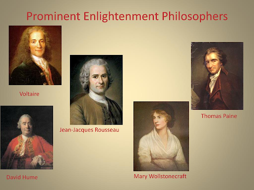

Sarena Oad
A period from the late 17th to 18th centuries of philosophical, political and scientific discourse that characterized European society. Centuries of traditions and customs were left behind as society entered a new era of individualism, exploration, politics and scientific endeavor. The ancient civilizations of Greece and Rome were revered by the enlightened thinkers of the time. Commentators of the time wished to break free of so-called political tyranny and achieve freedom and individuality(which would lead to desire for democracy) as shown by the philosophes of the time. The philosophes were intellectuals of the Enlightenment who applied reason to many areas of learning and challenged the monarchy, the church, privileges of wealth as well as advocating for ideas in modern society such as freedom of speech. Writers such as David Hume and Immanuel Kant assisted to help people think critically while philosophers such as Rousseau, Voltaire and Locke provided people with knowledge and revolutionary ideas and criticisms about society, politics and economy. Key factors of the time include reason, questioning of power(absolutism) and equality. Some of the ideas that emerged from the era include democracy, romanticism, government and international peace. These ideas are symbols of the age of reason, straying farther away from faith and towards rationalism. While this era is still not completely a representation of the age of reason, it is far closer due to its discoveries and ideas; however some groups were still bound by ideas from the age of faith. It was the beginning of the current age of reason as some (white men and privileged/educated women) were granted rights and liberty.

(Examples of some significant philosophers.)